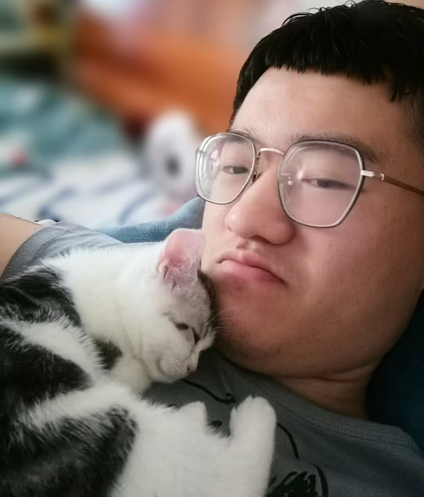
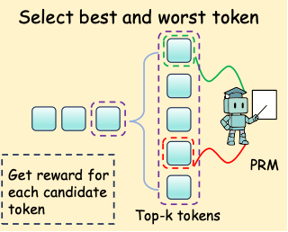
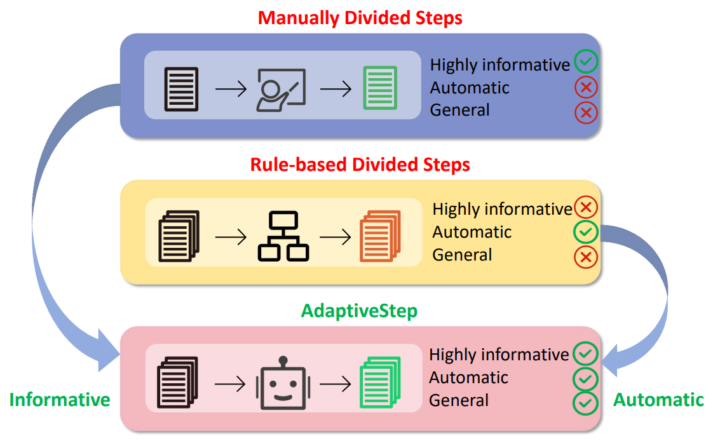
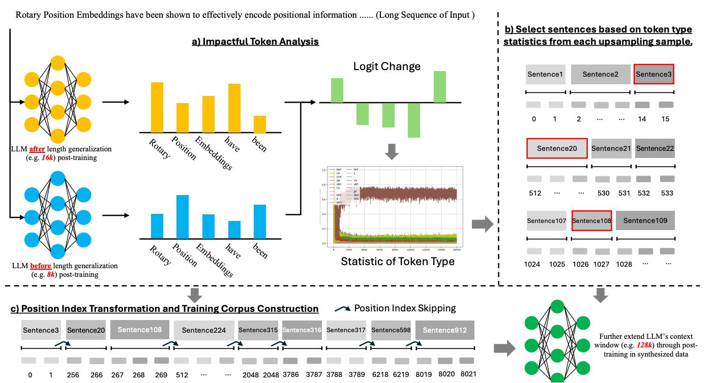
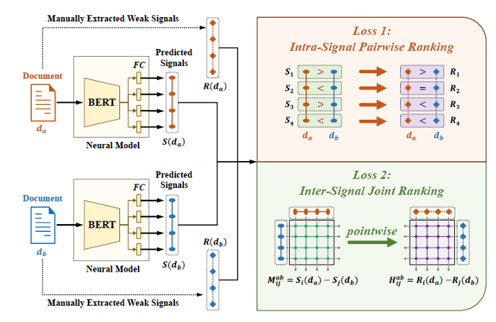
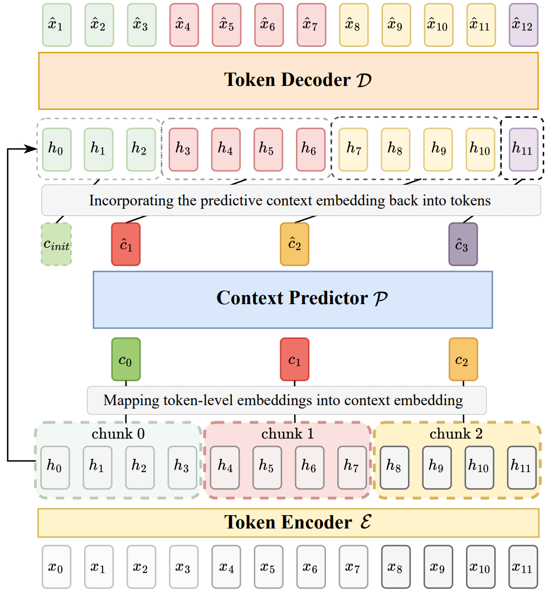
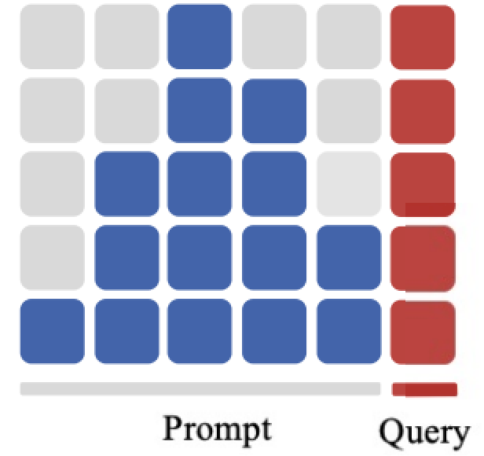
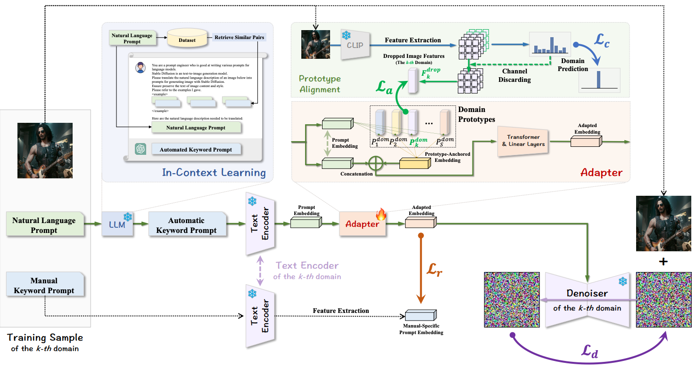

Yuliang Liu 刘玉梁Ph.D. Student, Nanjing University | Jointly trained at Shanghai Innovation Institute I am a Ph.D. student at Nanjing University, jointly trained at Shanghai Innovation Institute, where I am advised by Zhouhan Lin. Previously, I worked with Qing Gu and Zhiwei Jiang at Nanjing University. Before that, I received my bachelor's degree from Shandong University in 2021. I have worked on almost the full LLM pipeline, including evaluation, post-training, long-context modeling, reasoning, and efficient inference. Since 2025, I have focused primarily on pre-training, which I view as the foundation of model capability. [Email] [Google Scholar] [GitHub] [X] |
 The right one is me. |
My recent research centers on large language model pre-training and capability development. I am particularly interested in how better data, objectives, and training recipes can improve downstream reasoning and generalization.
More broadly, I enjoy building a full-stack understanding of language models, from how we train them, to how we evaluate them, to how we make them useful in real systems.

Enhancing LLM Reasoning via Non-Human-Like Reasoning Path Preference Optimization
Junjie Lu*, Yuliang Liu*, Chaofeng Qu, Wei Shen, Zhouhan Lin, Min Xu
arXiv, 2025
[Paper]



Unsupervised Readability Assessment via Learning from Weak Readability Signals
Yuliang Liu, Zhiwei Jiang, Yafeng Yin, Cong Wang, Sheng Chen, Zhaoling Chen, Qing Gu
SIGIR, 2023
[Paper]



AP-Adapter: Improving Generalization of Automatic Prompts on Unseen Text-to-Image Diffusion Models
Yuchen Fu, Zhiwei Jiang, Yuliang Liu, Cong Wang, Zexuan Deng, Zhaoling Chen, Qing Gu
NeurIPS, 2024
[Paper]
Conference reviewer: ICLR 2026.
Xiaomi Grand Prize Scholarship of Nanjing University, 2023.
First Prize Academic Scholarship of Nanjing University for Graduate Students, 2023 and 2024.